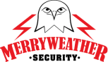

US D.o.D

[Redacted]
Merryweather Security
Terminale mobile per gestione incarichi fuorisede, sempre connesso ed integrato con software esistente alla sede centrale
SecuroServ

Applicazione mobile per gestione incarichi aziendali CEO